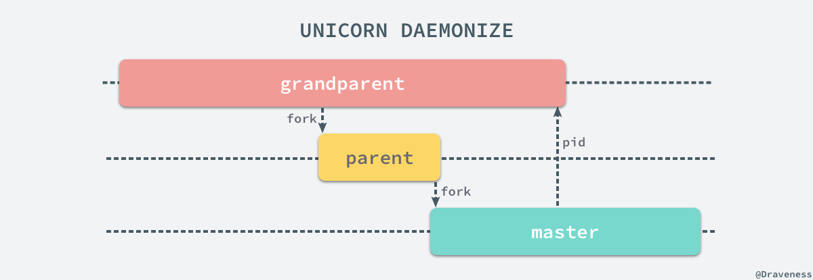
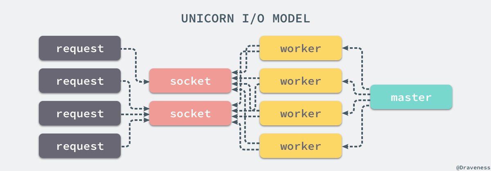
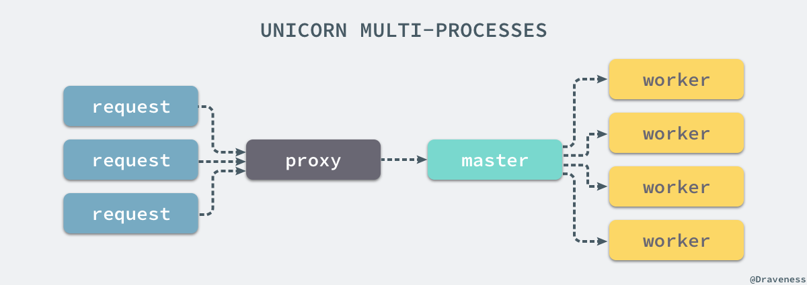

浅谈 Unicorn 的多进程模型
作为 Ruby 社区中老牌的 webserver，在今天也有很多开发者在生产环境使用 Unicorn 处理客户端的发出去的 HTTP 请求，与 WEBrick 和 Thin 不同，Unicorn 使用了完全不同的模型，提供了多进程模型批量处理来自客户端的请求。
Unicorn 为 Rails 应用提供并发的方式是使用 fork 创建多个 worker 线程，监听同一个 Socket 上的输入。
本文中使用的是 5.3.1 的 Unicorn，如果你使用了不同版本的 Unicorn，原理上的区别不会太大，只是在一些方法的实现上会有一些细微的不同。
实现原理
Unicorn 虽然也是一个遵循 Rack 协议的 Ruby webserver，但是因为它本身并没有提供 Rack 处理器，随意没有办法直接通过 rackup -s Unicorn 来启动 Unicorn 的进程。
$ unicorn -c unicorn.rb
I, [2017-11-06T08:05:03.082116 #33222] INFO -- : listening on addr=0.0.0.0:8080 fd=10
I, [2017-11-06T08:05:03.082290 #33222] INFO -- : worker=0 spawning...
I, [2017-11-06T08:05:03.083505 #33222] INFO -- : worker=1 spawning...
I, [2017-11-06T08:05:03.083989 #33222] INFO -- : master process ready
I, [2017-11-06T08:05:03.084610 #33223] INFO -- : worker=0 spawned pid=33223
I, [2017-11-06T08:05:03.085100 #33223] INFO -- : Refreshing Gem list
I, [2017-11-06T08:05:03.084902 #33224] INFO -- : worker=1 spawned pid=33224
I, [2017-11-06T08:05:03.085457 #33224] INFO -- : Refreshing Gem list
I, [2017-11-06T08:05:03.123611 #33224] INFO -- : worker=1 ready
I, [2017-11-06T08:05:03.123670 #33223] INFO -- : worker=0 ready
在使用 Unicorn 时，我们需要直接使用 unicorn 命令来启动一个 Unicorn 服务，在使用时可以通过 -c 传入一个配置文件，文件中的内容其实都是 Ruby 代码，每一个方法调用都是 Unicorn 的一条配置项：
$ cat unicorn.rb
worker_processes 2
可执行文件
unicorn 这个命令位于 bin/unicorn 中，在这个可执行文件中，大部分的代码都是对命令行参数的配置和说明，整个文件可以简化为以下的几行代码：
rackup_opts = # ...
app = Unicorn.builder(ARGV[0] || 'config.ru', op)
Unicorn::Launcher.daemonize!(options) if rackup_opts[:daemonize]
Unicorn::HttpServer.new(app, options).start.join
unicorn 命令会从 Rack 应用的标配 config.ru 文件或者传入的文件中加载代码构建一个新的 Rack 应用；初始化 Rack 应用后会使用 .daemonize! 方法将 unicorn 进程启动在后台运行；最后会创建并启动一个新的 HttpServer 的实例。
构建应用
读取 config.ru 文件并解析的过程其实就是直接使用了 Rack 的 Builder 模块，通过 eval 运行一段代码得到一个 Rack 应用：
From: lib/unicorn.rb @ line 39:
Owner: #<Class:Unicorn>
def self.builder(ru, op)
raw = File.read(ru)
inner_app = eval("Rack::Builder.new {(\n#{raw}\n)}.to_app", TOPLEVEL_BINDING, ru)
middleware = {
ContentLength: nil,
Chunked: nil,
CommonLogger: [ $stderr ],
ShowExceptions: nil,
Lint: nil,
TempfileReaper: nil,
}
Rack::Builder.new do
middleware.each do |m, args|
use(Rack.const_get(m), *args) if Rack.const_defined?(m)
end
run inner_app
end.to_app
end
在该方法中会执行两次 Rack::Builder.new 方法，第一次会运行 config.ru 中的代码，第二次会添加一些默认的中间件，最终会返回一个接受 #call 方法返回三元组的 Rack 应用。
守护进程
在默认情况下，Unicorn 的进程都是以前台进程的形式运行的，但是在生产环境我们往往需要在后台运行 Unicorn 进程，这也就是 Unicorn::Launcher 所做的工作。
From: lib/unicorn.rb @ line 23:
Owner: #<Class:Unicorn::Launcher>
def self.daemonize!(options)
cfg = Unicorn::Configurator
$stdin.reopen("/dev/null")
unless ENV['UNICORN_FD']
rd, wr = IO.pipe
grandparent = $$
if fork
wr.close
else
rd.close
Process.setsid
exit if fork
end
if grandparent == $$
master_pid = (rd.readpartial(16) rescue nil).to_i
unless master_pid > 1
warn "master failed to start, check stderr log for details"
exit!(1)
end
exit 0
else
options[:ready_pipe] = wr
end
end
cfg::DEFAULTS[:stderr_path] ||= "/dev/null"
cfg::DEFAULTS[:stdout_path] ||= "/dev/null"
cfg::RACKUP[:daemonized] = true
end
想要真正理解上述代码的工作，我们需要理解广义上的 daemonize 过程，在 Unix-like 的系统中，一个 daemon)（守护进程）是运行在后台不直接被用户操作的进程；一个进程想要变成守护进程通常需要做以下的事情：
- 执行
fork和exit来创建一个后台任务； - 从 tty 的控制中分离、创建一个新的 session 并成为新的 session 和进程组的管理者；
- 将根目录
/设置为当前进程的工作目录； - 将 umask 更新成
0以提供自己的权限管理掩码； - 使用日志文件、控制台或者
/dev/null设备作为标准输入、输出和错误；
在 .daemonize! 方法中我们总共使用 fork 创建了两个进程，整个过程涉及三个进程的协作，其中 grandparent 是启动 Unicorn 的进程一般指终端，parent 是用来启动 Unicorn 服务的进程，master 就是 Unicorn 服务中的主进程，三个进程有以下的关系：

上述的三个进程中，grandparent 表示用于启动 Unicorn 进程的终端，parent 只是一个用于设置进程状态和掩码的中间进程，它在启动 Unicorn 的 master 进程后就会立刻退出。
在这里，我们会分三个部分分别介绍 grandparent、parent 和 master 究竟做了哪些事情；首先，对于 grandparent 进程来说，我们实际上运行了以下的代码：
def self.daemonize!(options)
$stdin.reopen("/dev/null")
rd, wr = IO.pipe
wr.close
# fork
master_pid = (rd.readpartial(16) rescue nil).to_i
unless master_pid > 1
warn "master failed to start, check stderr log for details"
exit!(1)
end
end
通过 IO.pipe 方法创建了一对 Socket 节点，其中一个用于读，另一个用于写，在这里由于当前进程 grantparent 不需要写，所以直接将写的一端 #close，保留读的一端等待 Unicorn master 进程发送它的 pid，如果 master 没有成功启动就会报错，这也是 grandparent 进程的主要作用。
对于 parent 进程来说做的事情其实就更简单了，在 fork 之后会直接将读的一端执行 #close，这样无论是当前进程 parent 还是 parent fork 出来的进程都无法通过 rd 读取数据：
def self.daemonize!(options)
$stdin.reopen("/dev/null")
rd, wr = IO.pipe
# fork
rd.close
Process.setsid
exit if fork
end
在 parent 进程中，我们通过 Process.setsid 将当前的进程设置为新的 session 和进程组的管理者，从 tty 中分离；最后直接执行 fork 创建一个新的进程 master 并退出 parent 进程，parent 进程的作用其实就是为了启动新 Unicorn master 进程。
def self.daemonize!(options)
cfg = Unicorn::Configurator
$stdin.reopen("/dev/null")
rd, wr = IO.pipe
rd.close
Process.setsid
# fork
options[:ready_pipe] = wr
cfg::DEFAULTS[:stderr_path] ||= "/dev/null"
cfg::DEFAULTS[:stdout_path] ||= "/dev/null"
cfg::RACKUP[:daemonized] = true
end
新的进程 Unicorn master 就是一个不关联在任何 tty 的一个后台进程，不过到这里为止也仅仅创建另一个进程，Unicorn 还无法对外提供服务，我们将可读的 Socket wr 写入 options 中，在 webserver 成功启动后将通过 IO.pipe 创建的一对 Socket 将信息回传给 grandparent 进程通知服务启动的结果。
初始化服务
HTTP 服务在初始化时其实也没有做太多的事情，只是对 Rack 应用进行存储并初始化了一些实例变量：
From: lib/unicorn/http_server.rb @ line 69:
Owner: Unicorn::HttpServer
def initialize(app, options = {})
@app = app
@request = Unicorn::HttpRequest.new
@reexec_pid = 0
@ready_pipe = options.delete(:ready_pipe)
@init_listeners = options[:listeners] ? options[:listeners].dup : []
self.config = Unicorn::Configurator.new(options)
self.listener_opts = {}
@self_pipe = []
@workers = {}
@sig_queue = []
@pid = nil
config.commit!(self, :skip => [:listeners, :pid])
@orig_app = app
@queue_sigs = [:WINCH, :QUIT, :INT, :TERM, :USR1, :USR2, :HUP, :TTIN, :TTOU]
end
在 .daemonize! 方法中存储的 ready_pipe 在这时被当前的 HttpServer 对象持有，之后会通过这个管道上传数据。
启动服务
HttpServer 服务的启动一看就是这个 #start 实例方法控制的，在这个方法中总过做了两件比较重要的事情：
From: lib/unicorn/http_server.rb @ line 120:
Owner: Unicorn::HttpServer
def start
@queue_sigs.each { |sig| trap(sig) { @sig_queue << sig; awaken_master } }
trap(:CHLD) { awaken_master }
self.pid = config[:pid]
spawn_missing_workers
self
end
第一件事情是将构造器中初始化的 queue_sigs 实例变量中的全部信号，通过 trap 为信号提供用于响应事件的代码。
第二件事情就是通过 #spawn_missing_workers 方法 fork 当前 master 进程创建一系列的 worker 进程：
From: lib/unicorn/http_server.rb @ line 531:
Owner: Unicorn::HttpServer
def spawn_missing_workers
worker_nr = -1
until (worker_nr += 1) == @worker_processes
worker = Unicorn::Worker.new(worker_nr)
before_fork.call(self, worker)
pid = fork
unless pid
after_fork_internal
worker_loop(worker)
exit
end
@workers[pid] = worker
worker.atfork_parent
end
rescue => e
@logger.error(e) rescue nil
exit!
end
在这种调用了 fork 的方法中，我们还是将其一分为二来看，在这里就是 master 和 worker 进程，对于 master 进程来说：
From: lib/unicorn/http_server.rb @ line 531:
Owner: Unicorn::HttpServer
def spawn_missing_workers
worker_nr = -1
until (worker_nr += 1) == @worker_processes
worker = Unicorn::Worker.new(worker_nr)
before_fork.call(self, worker)
pid = fork
# ...
@workers[pid] = worker
end
rescue => e
@logger.error(e) rescue nil
exit!
end
通过一个 until 循环，master 进程能够创建 worker_processes 个 worker 进程，在每个循环中，上述方法都会创建一个 Unicorn::Worker 对象并在 fork 之后，将子进程的 pid 和 worker 以键值对的形式存到 workers 这个实例变量中。
before_fork 中存储的 block 是我们非常熟悉的，其实就是向服务器的日志中追加内容：
DEFAULTS = {
# ...
:after_fork => lambda { |server, worker|
server.logger.info("worker=#{worker.nr} spawned pid=#{$$}")
},
:before_fork => lambda { |server, worker|
server.logger.info("worker=#{worker.nr} spawning...")
},
:before_exec => lambda { |server|
server.logger.info("forked child re-executing...")
},
:after_worker_exit => lambda { |server, worker, status|
m = "reaped #{status.inspect} worker=#{worker.nr rescue 'unknown'}"
if status.success?
server.logger.info(m)
else
server.logger.error(m)
end
},
:after_worker_ready => lambda { |server, worker|
server.logger.info("worker=#{worker.nr} ready")
},
# ...
}
所有日志相关的输出大都在 Unicorn::Configurator 类中作为常量定义起来，并在初始化时作为缺省值赋值到 HttpServer 相应的实例变量上。而对于真正处理 HTTP 请求的 worker 进程来说，就会进入更加复杂的逻辑了：
def spawn_missing_workers
worker_nr = -1
until (worker_nr += 1) == @worker_processes
worker = Unicorn::Worker.new(worker_nr)
before_fork.call(self, worker)
# fork
after_fork_internal
worker_loop(worker)
exit
end
rescue => e
@logger.error(e) rescue nil
exit!
end
在这里调用了两个实例方法，其中一个是 #after_fork_internal，另一个是 #worker_loop 方法，前者用于处理一些 fork 之后收尾的逻辑，比如关闭仅在 master 进程中使用的 self_pipe：
def after_fork_internal
@self_pipe.each(&:close).clear
@ready_pipe.close if @ready_pipe
Unicorn::Configurator::RACKUP.clear
@ready_pipe = @init_listeners = @before_exec = @before_fork = nil
end
而后者就是 worker 持续监听 Socket 输入并处理请求的循环了。
循环
当我们开始运行 worker 中的循环时，就开始监听 Socket 上的事件，整个过程还是比较直观的：
From: lib/unicorn/http_server.rb @ line 681:
Owner: Unicorn::HttpServer
def worker_loop(worker)
ppid = @master_pid
readers = init_worker_process(worker)
ready = readers.dup
@after_worker_ready.call(self, worker)
begin
tmp = ready.dup
while sock = tmp.shift
if client = sock.kgio_tryaccept
process_client(client)
end
end
unless nr == 0
tmp = ready.dup
redo
end
ppid == Process.ppid or return
ret = IO.select(readers, nil, nil, @timeout) and ready = ret[0]
rescue => e
# ...
end while readers[0]
end
如果当前 Socket 上有等待处理的 HTTP 请求，就会执行 #process_client 方法队请求进行处理，在这里调用了 Rack 应用的 #call 方法得到了三元组：
From: lib/unicorn/http_server.rb @ line 605:
Owner: Unicorn::HttpServer
def process_client(client)
status, headers, body = @app.call(env = @request.read(client))
begin
return if @request.hijacked?
@request.headers? or headers = nil
http_response_write(client, status, headers, body,
@request.response_start_sent)
ensure
body.respond_to?(:close) and body.close
end
unless client.closed?
client.shutdown
client.close
end
rescue => e
handle_error(client, e)
end
请求的解析是通过 Request#read 处理的，而向 Socket 写 HTTP 响应是通过 #http_response_write 方法来完成的，在这里有关 HTTP 请求的解析和响应的处理都属于一些不重要的实现细节，在这里也就不展开介绍了；当我们已经响应了用户的请求就可以将当前 Socket 直接关掉，断掉这个 TCP 连接了。
调度
我们在上面已经通过多次 fork 启动了用于管理 Unicorn worker 进程的 master 以及多个 worker 进程，由于 Unicorn webserver 涉及了多个进程，所以需要进程之间进行调度。
在 Unix 中，进程的调度往往都是通过信号来进行的，HttpServer#join 就在 Unicorn 的 master 进程上监听外界发送的各种信号，不过在监听信号之前，要通过 ready_pipe 通知 grandparent 进程当前 master 进程已经启动完毕：
From: lib/unicorn/http_server.rb @ line 267:
Owner: Unicorn::HttpServer
def join
respawn = true
last_check = time_now
proc_name 'master'
logger.info "master process ready" # test_exec.rb relies on this message
if @ready_pipe
begin
@ready_pipe.syswrite($$.to_s)
rescue => e
logger.warn("grandparent died too soon?: #{e.message} (#{e.class})")
end
@ready_pipe = @ready_pipe.close rescue nil
end
# ...
end
当 grandparent 进程，也就是执行 Unicorn 命令的进程接收到命令退出之后，就可以继续做其他的操作了，而 master 进程会进入一个 while 循环持续监听外界发送的信号：
def join
# ...
begin
reap_all_workers
case @sig_queue.shift
# ...
when :WINCH
respawn = false
soft_kill_each_worker(:QUIT)
self.worker_processes = 0
when :TTIN
respawn = true
self.worker_processes += 1
when :TTOU
self.worker_processes -= 1 if self.worker_processes > 0
when # ...
end
rescue => e
Unicorn.log_error(@logger, "master loop error", e)
end while true
# ...
end
这一部分的几个信号都会改变当前 Unicorn worker 的进程数，无论是 TTIN、TTOU 还是 WINCH 信号最终都修改了 worker_processes 变量，其中 #soft_kill_each_worker 方法向所有的 Unicorn worker 进程发送了 QUIT 信号。
除了一些用于改变当前 worker 数量的信号，Unicorn 的 master 进程还监听了一些用于终止 master 进程或者更新配置文件的信号。
def join
# ...
begin
reap_all_workers
case @sig_queue.shift
# ...
when :QUIT
break
when :TERM, :INT
stop(false)
break
when :HUP
respawn = true
if config.config_file
load_config!
else # exec binary and exit if there's no config file
reexec
end
when # ...
end
rescue => e
Unicorn.log_error(@logger, "master loop error", e)
end while true
# ...
end
无论是 QUIT 信号还是 TERM、INT 最终都执行了 #stop 方法，选择使用不同的信号干掉当前 master 管理的 worker 进程：
From: lib/unicorn/http_server.rb @ line 339:
Owner: Unicorn::HttpServer
def stop(graceful = true)
self.listeners = []
limit = time_now + timeout
until @workers.empty? || time_now > limit
if graceful
soft_kill_each_worker(:QUIT)
else
kill_each_worker(:TERM)
end
sleep(0.1)
reap_all_workers
end
kill_each_worker(:KILL)
end
上述方法其实非常容易理解，它会根据传入的参数选择强制终止或者正常停止所有的 worker 进程，这样整个 Unicorn 服务才真正停止并不再为外界提供服务了。
当我们向 master 发送 TTIN 或者 TTOU 信号时只是改变了实例变量 worker_process 的值，还并没有 fork 出新的进程，这些操作都是在 nil 条件中完成的：
def join
# ...
begin
reap_all_workers
case @sig_queue.shift
when nil
if (last_check + @timeout) >= (last_check = time_now)
sleep_time = murder_lazy_workers
else
sleep_time = @timeout/2.0 + 1
end
maintain_worker_count if respawn
master_sleep(sleep_time)
when # ...
end
rescue => e
Unicorn.log_error(@logger, "master loop error", e)
end while true
# ...
end
当 @sig_queue.shift 返回 nil 时也就代表当前没有需要处理的信号，如果需要创建新的进程或者停掉进程就会通过 #maintain_worker_count 方法，之后 master 进程会陷入睡眠直到被再次唤醒。
From: lib/unicorn/http_server.rb @ line 561:
Owner: Unicorn::HttpServer
def maintain_worker_count
(off = @workers.size - worker_processes) == 0 and return
off < 0 and return spawn_missing_workers
@workers.each_value { |w| w.nr >= worker_processes and w.soft_kill(:QUIT) }
end
通过创建缺失的进程并关闭多余的进程，我们能够实时的保证整个 Unicorn 服务中的进程数与期望的配置完全相同。
在 Unicorn 的服务中，不仅 master 进程能够接收到来自用户或者其他进程的各种信号，worker 进程也能将接受到的信号交给 master 处理。
所以即使向 worker 进程发送 TTIN 或者 TTOU 等信号也能够改变整个 Unicorn 服务中 worker 进程的个数。
多进程模型
总的来说，Unicorn 作为 Web 服务使用了多进程的模型，通过一个 master 进程来管理多个 worker 进程，其中 master 进程不负责处理客户端的 HTTP 请求，多个 worker 进程监听同一组 Socket：

一组 worker 进程在监听 Socket 时，如果发现当前的 Socket 有等待处理的请求时就会在当前的进程中直接通过 #process_client 方法处理，整个过程会阻塞当前的进程，而多进程阻塞 I/O 的方式没有办法接受慢客户端造成的性能损失，只能通过反向代理 nginx 才可以解决这个问题。

在 Unicorn 中，worker 之间的负载均衡是由操作系统解决的，所有的 worker 是通过 .select 方法等待共享 Socket 上的请求，一旦出现可用的 worker，就可以立即进行处理，避开了其他负载均衡算法没有考虑到请求处理时间的问题。
总结
Unicorn 的源代码其实是作者读过的可读性最差的 Ruby 代码了，很多 Ruby 代码的风格写得跟 C 差不多，看起来也比较头疼，可能是需要处理很多边界条件以及信号，涉及较多底层的进程问题；虽然代码风格上看起来确实让人头疼，不过实现还是值得一看的，重要的代码大都包含在 unicorn.rb 和 http_server.rb 两个文件中，阅读时也不需要改变太多的上下文。
相比于 WEBrick 的单进程多线程的 I/O 模型，Unicorn 的多进程模型有很多优势，一是能够充分利用多核 CPU 的性能，其次能够通过 master 来管理并监控 Unicorn 中包含的一组 worker 并提供了零宕机部署的功能，除此之外，多进程的 I/O 模型还不在乎当前的应用是否是线程安全的，所以不会出现线程竞争等问题，不过 Unicorn 由于 fork 了大量的 worker 进程，如果长时间的在 Unicorn 上运行内存泄露的应用会非常耗费内存资源，可以考虑使用 unicorn-worker-killer 来自动重启。